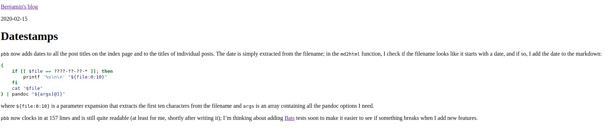
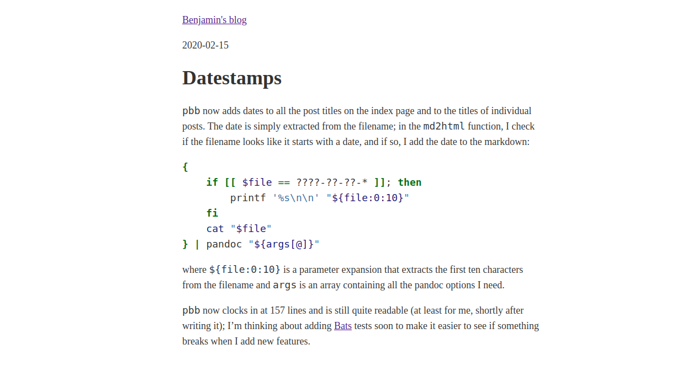

2020-02-16
pbb is now producing something that’s not quite as much saying 90s HTML
any longer. I took some inspiration from the satire
(debatable) websites that started with the mothereffing website1. I’d say the original pbb output was very close to that (i.e., no styling at all), but thanks to sane pandoc defaults, it didn’t even look all that bad, also on mobile devices. Only the super long lines weren’t all that great on bigger displays.

pbb outputAs it turns out, the m-effing website inspired a whole slew of improvements, each more assertive than the other: better, even better, best, the best, perfect, and (unoriginally) another the best one.
There’s even one of these awesome
lists on GitHub, and from there, I found a paper about the original one. Academic and all.
The different improvements revolve mostly around styling, security, accessibility and the like, but the overall idea stays the same. I took the styling of the first better one and tweaked it a tiny little bit:
body {
color: #333;
font-size: 18px;
line-height: 1.6;
margin: 40px auto;
max-width: 650px;
padding: 0 10px;
}
h1, h2, h3 {
line-height:1.2;
}
img {
max-width: 100%;
}I didnt know that there’s a whole war out there regarding contrast and if it is bad or not. I settled on the same dark grey as the New York Times uses. They probably know how to do this.
The other change I did was for images, to prevent that they’d be wider than the text column.
All in all, the result looks like this (on the date this post was written):

I’ll look into a nicer font and different styling for links, but other than that, I feel like that’s a pretty good ROI. Well, the font in code blocks feels a bit large now. Still. Good ROI.
Got to keep the SEO juice for these terms reasonably low.↩︎